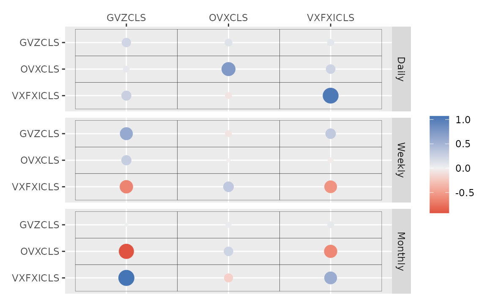
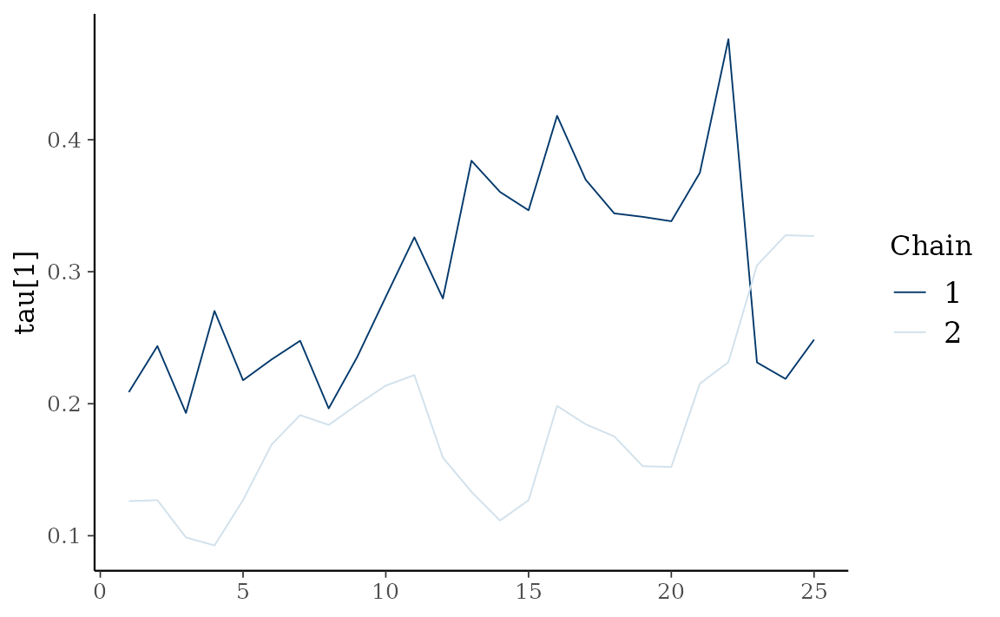

etf <- etf_vix[1:100, 1:3]
# Split-------------------------------
h <- 5
etf_eval <- divide_ts(etf, h)
etf_train <- etf_eval$train
etf_test <- etf_eval$testModels with Stochastic Volatilities
By specifying cov_spec = set_sv(),
var_bayes() and vhar_bayes() fits VAR-SV and
VHAR-SV with shrinkage priors, respectively.
- Three different prior for innovation covariance, and specify through
bayes_spec- Minneosta prior
- BVAR:
set_bvar() - BVHAR:
set_bvhar()andset_weight_bvhar()
- BVAR:
- SSVS prior:
set_ssvs() - Horseshoe prior:
set_horseshoe()
- Minneosta prior
-
sv_spec: prior settings for SV,set_sv() -
intercept: prior for constant term,set_intercept()
set_sv()
#> Model Specification for SV with Cholesky Prior
#>
#> Parameters: Contemporaneous coefficients, State variance, Initial state
#> Prior: Cholesky
#> ========================================================
#> Setting for 'shape':
#> [1] rep(3, dim)
#>
#> Setting for 'scale':
#> [1] rep(0.01, dim)
#>
#> Setting for 'initial_mean':
#> [1] rep(1, dim)
#>
#> Setting for 'initial_prec':
#> [1] 0.1 * diag(dim)
set_intercept()
#> Model Specification for Intercept:
#> ----------------------------------------------------
#> Normal(rep(0, dim), 0.1^2 I_dim)SSVS
(fit_ssvs <- vhar_bayes(etf_train, num_chains = 2, num_iter = 50, bayes_spec = set_ssvs(), cov_spec = set_sv(), include_mean = FALSE, minnesota = "longrun"))
#> Call:
#> vhar_bayes(y = etf_train, num_chains = 2, num_iter = 50, bayes_spec = set_ssvs(),
#> cov_spec = set_sv(), include_mean = FALSE, minnesota = "longrun")
#>
#> BVHAR with Stochastic Volatility
#> Fitted by Gibbs sampling
#> Number of chains: 2
#> Total number of iteration: 50
#> Number of burn-in: 25
#> ====================================================
#>
#> Parameter Record:
#> # A draws_df: 25 iterations, 2 chains, and 312 variables
#> phi[1] phi[2] phi[3] phi[4] phi[5] phi[6] phi[7] phi[8]
#> 1 0.633 0.206 0.2400 0.652 0.328 1.057 0.0984 0.601
#> 2 0.627 0.249 0.2470 0.632 0.432 0.745 0.0768 0.723
#> 3 0.564 0.272 0.2463 0.821 0.439 0.766 -0.0317 0.675
#> 4 0.534 0.310 0.2748 1.031 0.476 0.991 -0.1779 0.881
#> 5 0.498 0.310 0.2378 0.832 0.483 1.061 -0.2763 0.807
#> 6 0.517 0.326 0.1493 0.862 0.457 1.073 -0.1663 0.726
#> 7 0.491 0.323 0.2557 0.924 0.417 1.058 -0.3466 0.599
#> 8 0.418 0.317 0.1468 0.811 0.476 0.864 -0.2569 0.625
#> 9 0.411 0.305 0.0949 0.745 0.513 0.986 -0.4408 0.616
#> 10 0.390 0.339 0.1804 0.686 0.521 0.923 -0.2585 0.493
#> # ... with 40 more draws, and 304 more variables
#> # ... hidden reserved variables {'.chain', '.iteration', '.draw'}
autoplot(fit_ssvs)
Horseshoe
(fit_hs <- vhar_bayes(etf_train, num_chains = 2, num_iter = 50, bayes_spec = set_horseshoe(), cov_spec = set_sv(), include_mean = FALSE, minnesota = "longrun"))
#> Call:
#> vhar_bayes(y = etf_train, num_chains = 2, num_iter = 50, bayes_spec = set_horseshoe(),
#> cov_spec = set_sv(), include_mean = FALSE, minnesota = "longrun")
#>
#> BVHAR with Stochastic Volatility
#> Fitted by Gibbs sampling
#> Number of chains: 2
#> Total number of iteration: 50
#> Number of burn-in: 25
#> ====================================================
#>
#> Parameter Record:
#> # A draws_df: 25 iterations, 2 chains, and 346 variables
#> phi[1] phi[2] phi[3] phi[4] phi[5] phi[6] phi[7]
#> 1 0.3111 -0.0300 -0.00965 -0.04831 0.001388 -0.02314 0.2693
#> 2 -0.0886 -0.0788 0.00130 0.08531 -0.007908 -0.04808 0.1781
#> 3 0.5745 -0.3745 -0.00172 0.03641 0.001894 -0.04237 0.0438
#> 4 0.1945 -0.2443 -0.00483 -0.11341 0.005605 -0.00394 -0.1072
#> 5 0.1092 -0.1386 -0.00175 -0.00467 0.013120 -0.01959 0.0846
#> 6 -0.1576 -0.1313 -0.00939 -0.02000 -0.009616 0.12197 -0.0149
#> 7 -0.0909 -0.0298 -0.00471 0.07213 0.000793 -0.09310 0.1704
#> 8 0.0905 -0.1988 0.01800 0.25894 0.009520 0.04750 0.1434
#> 9 0.2868 -0.1209 0.02105 0.64931 0.009746 0.07310 0.0674
#> 10 0.4933 0.0473 -0.12710 0.01285 -0.010039 0.05586 0.0635
#> phi[8]
#> 1 -0.00646
#> 2 -0.04974
#> 3 -0.01790
#> 4 -0.04062
#> 5 -0.11573
#> 6 -0.17867
#> 7 -0.05606
#> 8 0.13352
#> 9 0.05357
#> 10 -0.20083
#> # ... with 40 more draws, and 338 more variables
#> # ... hidden reserved variables {'.chain', '.iteration', '.draw'}Bayesian visualization
autoplot() also provides Bayesian visualization.
type = "trace" gives MCMC trace plot.
autoplot(fit_hs, type = "trace", regex_pars = "tau")
type = "dens" draws MCMC density plot.
autoplot(fit_hs, type = "dens", regex_pars = "tau")